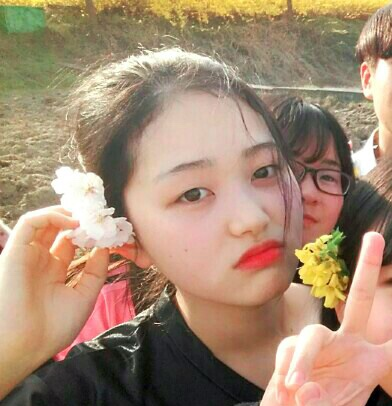
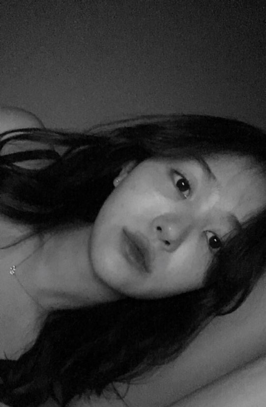
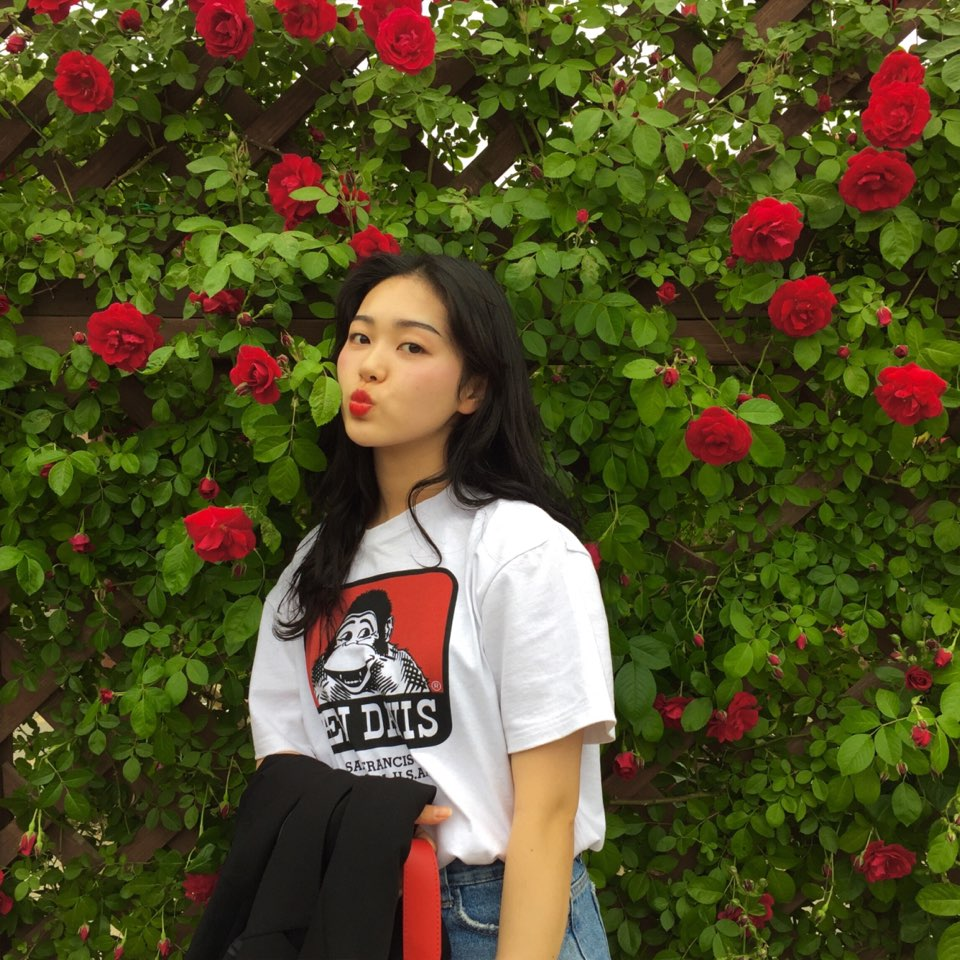
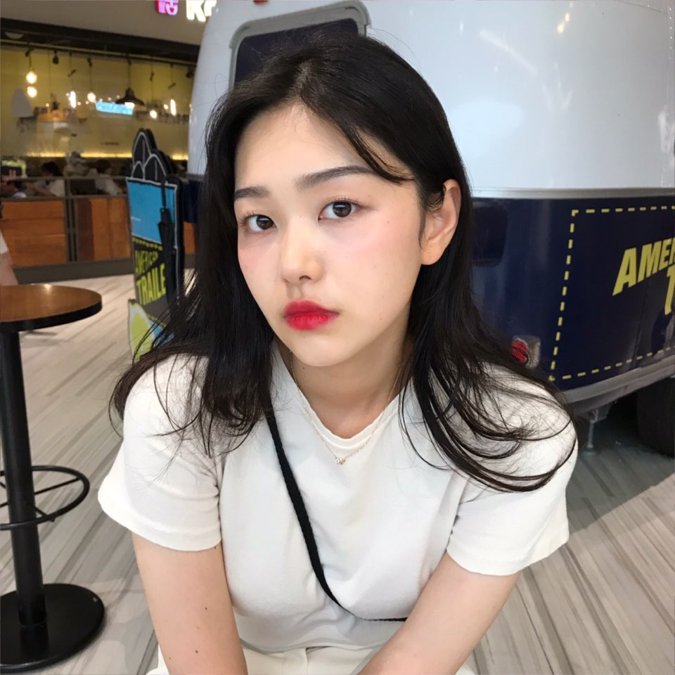
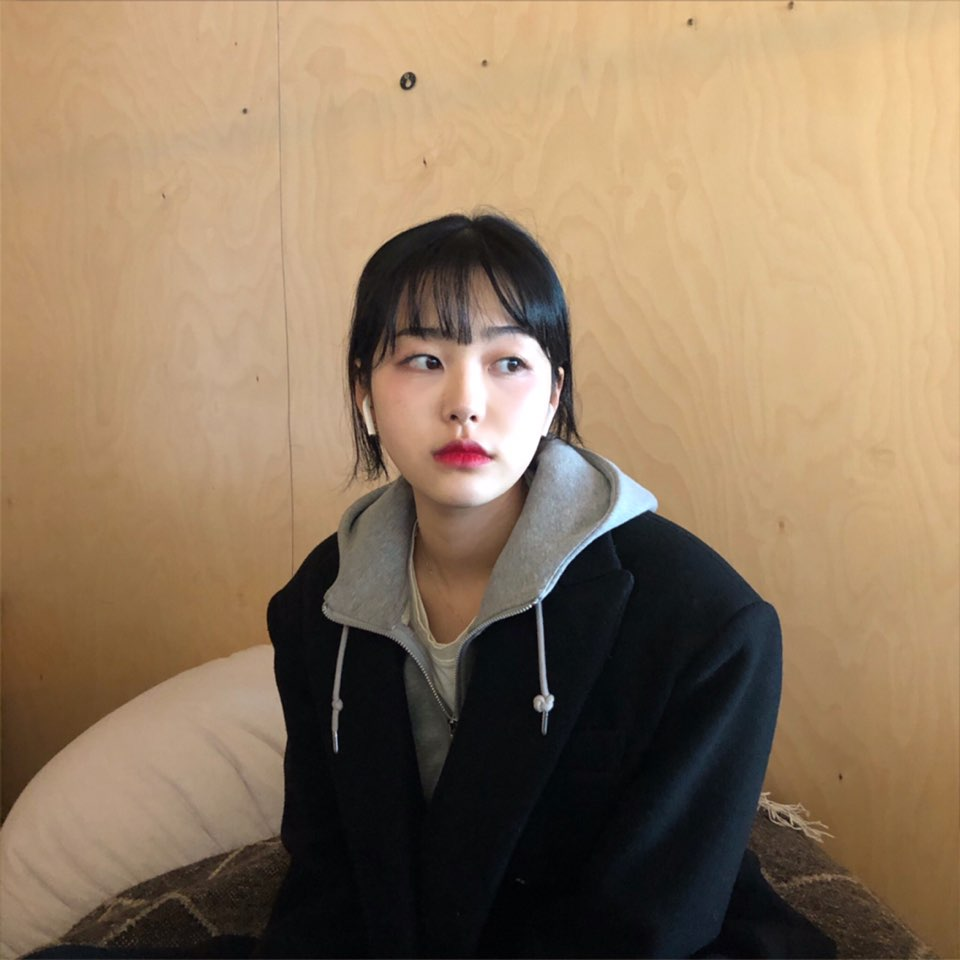
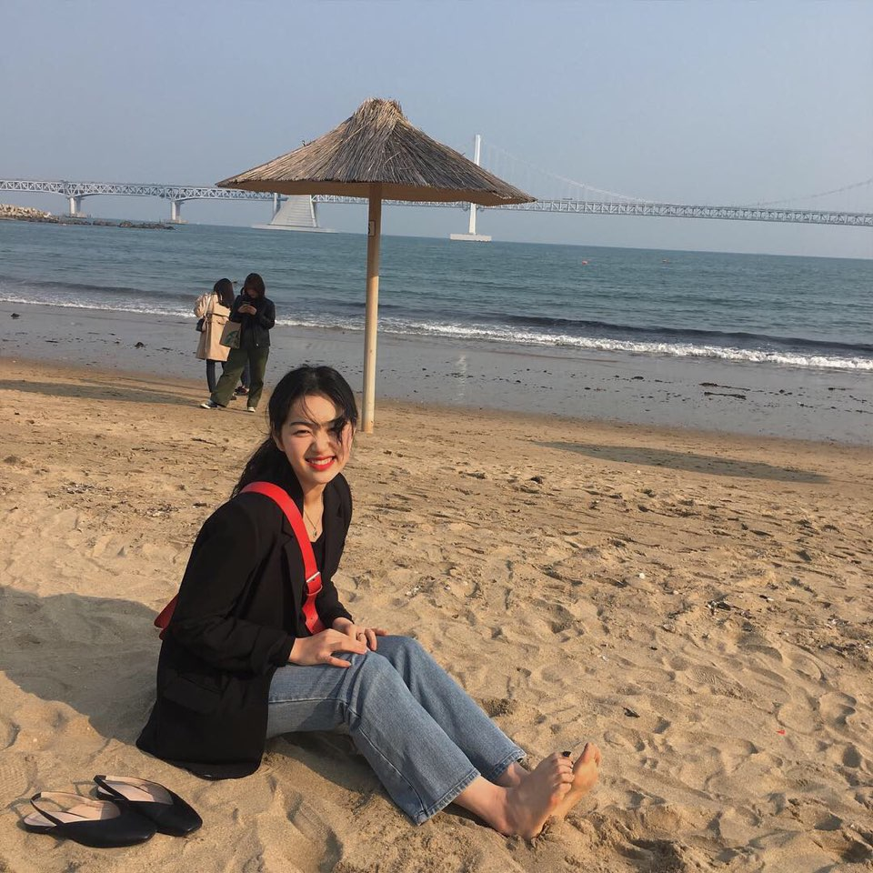

아름다운 배경삼아 찍는 순간 뭔가 마음에 안드나보다.

알 수 없는 표정으로 무슨 생각을 하고 있는지 모르겠다.
처음엔 왼쪽 눈밑이 부어있길래 운줄알았다.

장미꽃이 핀 것으로 보아 6월 정도로 추정된다.
삐쭉 내민 입술은 아무래도 본인이 입은 티의 고릴라를 따라한 듯 하다.

후대에 무표정의 표본이라 불려질 사진이다.
남색과 노란색 하늘색 얼핏 보이는 핑크색
그리고 갈색 나쁘지 않은 조화를 이루고 있는데 왜 가려 이년아.

웹페이지 만드는 기술배우고 있는데
뭐하고 있는지 모르겠다. 이런거는 PPT가 더 적합할 듯 하다.
지금 내가 사진찍으면 저표정일 것 같다.

부산여자 다됐다. 발랄하고 행복하게 웃는 전여진이
모래사장과 조금의 거품이는 바다와 잘 어울린다.
이렇게 웃을일이 많았으면 좋겠다.